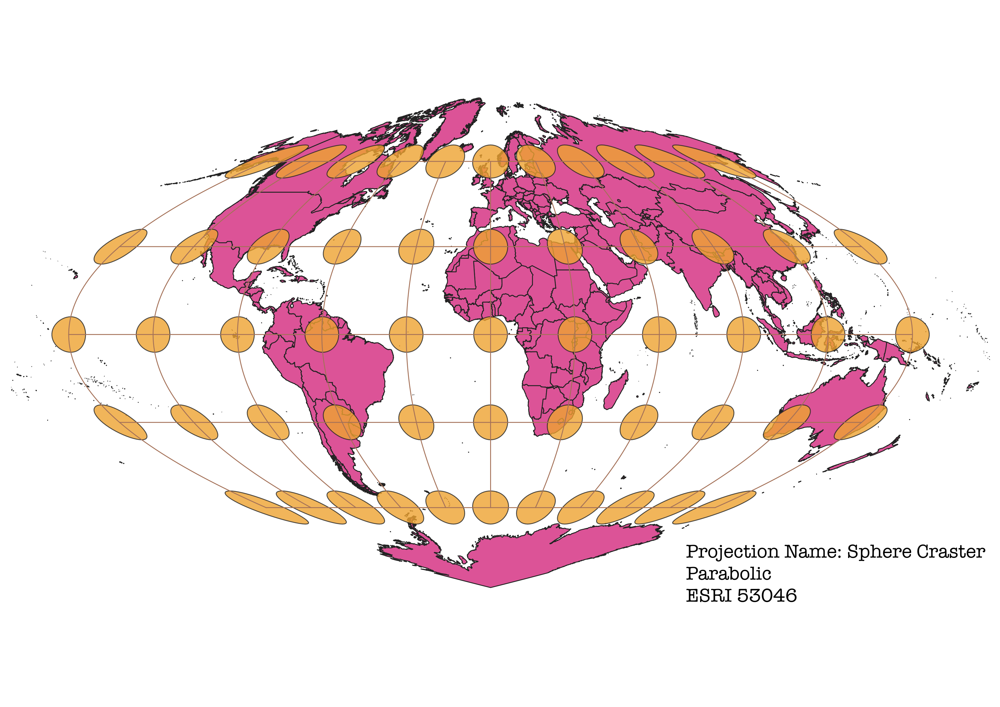

In this project I learned how to display images in different projections
How I made the different map projections using QGIS
First I installed two plugins called Globe Builder and Indicatrix Mapper that allows you to customize the world view of different map projections and provide caps that show how the shape of the countries are distorted with each projection.
Then I used the Project Properties-CRS tab that allows you to change the map projections in order to select the different ones I wanted. After that I added a caption to identify the map names and saved each as a PNG.
WGS84 Projection
This is the traditional mercator projection. It preserves shape and distance towards the equator but distorts the countries
towards the poles by stretching them horizontally

Aitoff Projection
This is an Azimuthal Equidistant projection that stretches the globe along the Equator. From what I can tell, the shapes of the continents are largely accurate, but distance is distorted.

Pseudo-Mercator Projection
This projection is in EPSG 3857. It is used in many classrooms and on Google Maps due to its accuracy in showing shape and direction near the equator.
However, this projection does distort the countries at the poles, making them look bigger than they are. For example, Greenland appears much larger that it actually is.

Sphere Winkel I Projection
This projection is does a good job at preserving the relative size ratios of countries. Ex: Greenland is a more accurate size than on the Mercator projection (much smaller than Africa).
World Cylindrical Equal Area Projection
This projection is similar to the WGS84 and Mercator projections in that it is more accurate near the equator than at the poles.
However, it is less accurate overall than other projections because of how squished the northern countries near the poles are.

World Equidistant Conic Projection
This projection is good for mapping East-West regions. It preserves direction but it distorts the distance at the edges to be more spread out.

North Pole Azimuthal Equidistant Projection
This projection is another conic that presents a similar view to the one above, but has a little less distortion at the top of the projection.
Sphere Craster Parabolic Projection
This projection is almost a rounded diamond shape. I think it does a good job preserving the shape and size of countries for the most part,
aside from slight distortion at the top and sides of the projection.

The World From Space Projection
Like the name suggests, this projection is a view of what the Earth looks like from space. Without any clouds or differences in lighting, this allows viewers to
get an accurate interpretation the shape, direction, and size of countries. However, because it is a sphere, the whole globe is not able to be seen at one time.
Data used for this project
Download Natrual Earth 1:10m Cultural Vector